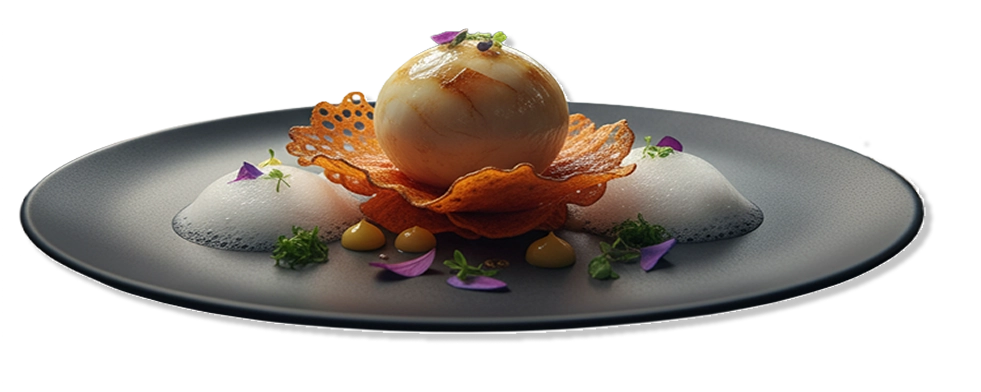
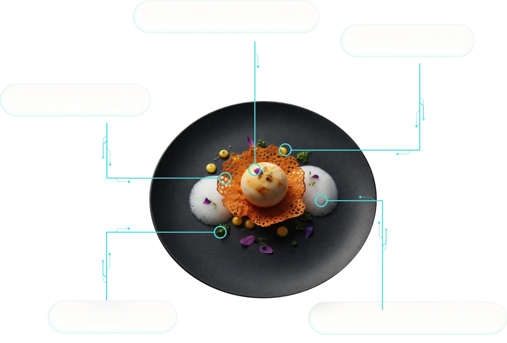
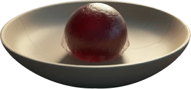
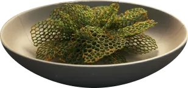
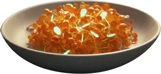
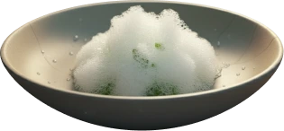

Scopri un'opera d'arte culinaria dove nettare di frutti antichi incontra la croccantezza del corallo d'alga e la freschezza dell'aria distillata.

Scopri gli ingredienti

Ingredienti

Nettare Cristallizzato
Una sfera vellutata ottenuta dalla riduzione di frutti antichi recuperati, racchiusa
in una sottile membrana edibile che esplode al palato liberando la dolcezza pura
dell'agricoltura rigenerativa.

Cialda di Corallo
Una struttura croccante a nido d'ape, stampata con nutrienti a base di farina di
alghe e zafferano idroponico. Rappresenta la resilienza della vita che si adatta e
cresce su basi tecnologiche sostenibili.

Clorofilla Viva
Un insieme di germogli di brassica e petali bioluminescenti coltivati in camere a
luce solare filtrata. Portano nel piatto la forza vitale e il colore pulsante di una
natura che ha ripreso i suoi spazi.

Spuma di aria
Una spuma eterea e leggerissima ottenuta dal recupero dell'umidità atmosferica e
infusa con menta selvatica. Serve a pulire il palato tra un morso e l'altro,
portando una freschezza ancestrale.